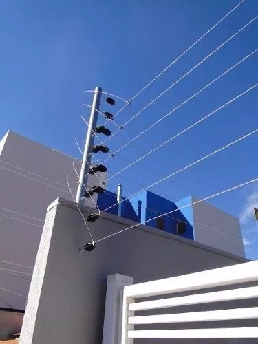
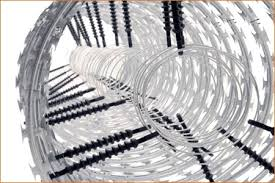
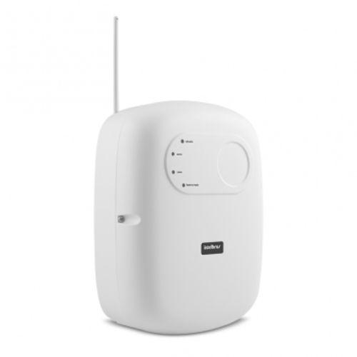
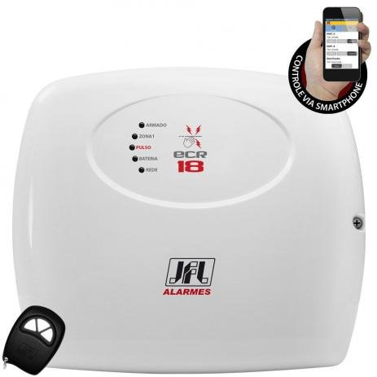
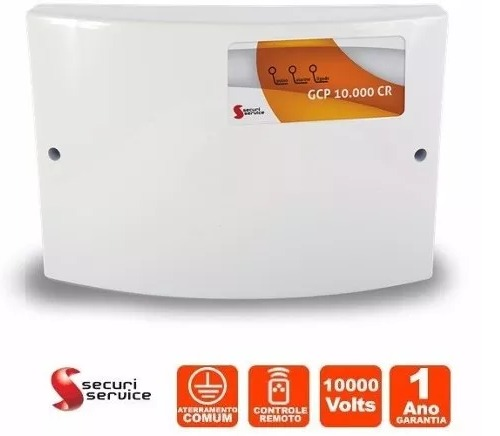

instalação de cerca eletrica em joao pessoa
instalador de cerca eletrica convencional
cercas elétricas são bastante confiáveis como sistema de segurança, possuindo baixo custo de instalação e pouco risco às pessoas ou animais que tenham contato com ela. O seu principal objetivo é assustar o invasor, podendo provocar a paralisação, mas nunca provocando a morte.
A ceca elétrica convencional e a mais vista no mercado ela e feita com hastes verticais e fios de aço, vou lista os materiais usados nesse tipo de cercas
Entre em contato com a wwantenas e solicite um técnico instalador de cercas eletricas, ele ira a sua casa fazer seu orçamento. Os técnicos instaladores de cercas elétricas da wwantenas são os melhores do mercado. Fazemos de tudo pela sua confiança

- Central de choque
- Bateria de emergência
- Sirene
- Hastes que servem para sustentar os fios
- Fios de aço que são inoxidáveis
- Cabos de alta isolação
- Repuxos que são os responsáveis por manter os fios esticados e as placas de advertência.
Instalador de Cerca elétrica concertina
É construída com arame farpado de alta tensão de ruptura, em formato de espiral, contendo lâminas de aço perfurantes e cortantes. Para esse tipo de cerca elétrica existem três padrões, diferentes apenas pelo equipamento utilizado para fixação e ajuste:
O instalador de cerca elétrica concertina e uma profissional muito requisitado, pois existem poucos técnicos que trabalha na instalação desse modelo de cerca elétrica. Ligue e peça seu orçamento.

- Simples, em forma de espiral
- Dupla clipada, com espiras entrelaçadas ou travadas entre si
- Flat, quando paralela ao muro
Centrais de choque

A Cerca Elétrica, e muito utilizada em casas e codomínios e etc, e uma forma de proteção bastante eficiente. O choque afugenta o intruso e a sirene toca avisando os moradores, disparando-a. Iremos sita alguns tipos de centrais de choque e iremos recomenda a que mais usamos.
a central de choque que emite pulsos de tensão com baixa amperagem, o que faz com que o invasor não “grude” na cerca e receba um choque que o impulsiona para longe dos fios
Centrais Simples com chave magnética
Central Simples com chave magnética sua função e alimentar o sistema da cerca elétrica, é a mais básica. Ativada e desativada através de uma chave magnética. não tem outra função além de alimenta o sistema
Central com controle e setor de alarme
Central com controle e setor de alarme. São as centrais mais utilizadas, armadas e desarmadas por controle remoto. Possui um setor de alarme, ou seja ela permite a integração com um sistema de alarmes.
Central com discadora embutida e controle remoto
Central com discadora embutida e controle remoto ela Além de armar e desarmar através de um controle remoto e possuir setor de alarme, essa central tem a função de discadora telefônica, permitindo que o usuário cadastre alguns números de telefone para que seja efetuada uma ligação para esses números quando houver intrusão, seja essa intrusão detectada pelos sensores de alarme ou pelos fios da cerca.
Central industrial
as centrais de choque industriais sao capazes de alimentar uma grande quilometragem de fios que cercam uma área extensa. Ideal para grandes terrenos como de indústrias, condomínios, etc.
Centrais indicadas pela wwantenas
ECR 18 JFL: Central Com Acesso Remoto Via celular

E uma das cercas indicadas pela wwantenas porque ela possui boa capacidade de metragem, além de ser uma das que permitem maior potência.
A central pode ser usada por meio de controle remoto, já que conta com sensores sem fio. Além disso, uma de suas principais vantagens é poder ser controlada pelo smartphone
O ECR18 traz 3 níveis de sensibilidade variados, podendo emitir descargas menores para evitar riscos fatais.
Aqui na nossa região de joao pessoa ela e a menos usada, mais contínua sendo a mais completa pois permite o controle a distância e isso e muito útil no dia a dia. Entre em contato com nosso técnico instalador.
- Controle por smartphonee
- Boa metragem
- Sirene
- Possibilidade de ajustar sensibilidade
Pontos Positivos
- Um pouco cara
Pontos Negativos
ECL 5002 Intelbras
E a mais potente, ela também possui a melhor metragem.
Ela também conta com um sistema de aprendizagem automática, que denuncia tentativas de sabotagem disparando uma sirene ou acionando sua central de alarme..
O modelo também tem três níveis de sensibilidade, Por outro lado, ele não traz controle por smartphone, apenas pelo controle remoto, que já e bem util também
Ela e o modelo perfeito para que não que compra a com mais recursos, porém que uma com recursos suficientes, Entre em contato com nosso técnico instalador.
- Conexão com central de alarme
- Maior metragem
- Maior descarga
Pontos Positivos
- Não conta com controle por smartphone
Pontos Negativos
GCP 10000 CR: A Opção Mais Barata

A menos potente das centrais mostradas aqui, Por outro lado, também conta com uma metragem excelente.
Ou seja, a mesma do modelo anterior, mas por um valor mais acessível, um o controle remoto acompanha a central..
Por ser um modelo mais acessível e barato que o dos concorrentes, a central GCP10000 não traz muitas funcionalidades extras.Isso significa que ela cumprirá bem o seu papel, sem funcionalidades a mais.
Ela e a central mais instalada na nossa região de joao pessoa, a mais barata, mais isso não significa ser ruim ela e muito boa no quesito de central de choque, mais sem outras funcionalidades. Entre em contato com nosso < técnico instalador de cerca eletrica
- Preço acessível
- otima metregem
- Maior descarga
Pontos Positivos
- Não conta com controle por smartphone
- Menor voltagem